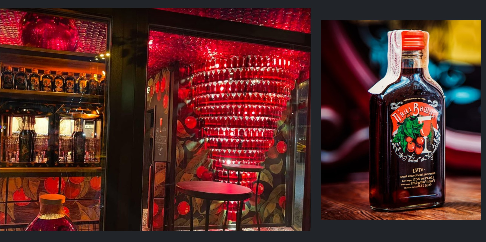

We are starting from my favorite bar in the center - Flacon. Their slogan sounds like that: “Enjoy the fragrance of alcohol”, and it looks, and tastes as pedantic as it sounds. They are expanding of boundaries of what's known as alcohol drinks.
You are welcomed by an authentic interior and a small menu is brought to you. To my memories, I could hardly have counted higher than 10 positions, but each of the drinks that they are making is gorgeous, unique, and mindblowing.
Originated in Lviv, the western cultural capital of Ukraine this cute tiny bar welcomes you with its unique design at the entrance of Deribasivska street.
There is only one drink that you can order here - branded Cherry Liquor. Minimalism at its core. But this liquor is worth opening the whole bar for it. You won't regret giving it a try, moreover, you definitely should bring back home a few souvenir bottles, as you won't find it anywhere except the Drunk Cherry bar.
There are a lot of clubs in Odessa, but True Man has 2 unique features that stand out:
To be honest, the latter is the reason I've got into it. But stayed I because of the great atmosphere, fantastic DJ Tetia Lyuda (Aunt Lyuda), and people, that really love to party on a Monday night.
Huge restaurant, bar, and craft beer brewery. Located far from the center in Gagarin plaza a few steps away from Arkadia - Odessa's "second center", an alley leading to the seashore woth more restaurants and huge beach clubs that are opened mostly during the summer tourist season in Odessa.
Beerteka welcomes you with a hall, the walls of which are fully covered in beer bottles. The restaurant's interior is designed in industrial style.
It's a whole and all beautiful place to spend the evening in, but don't forget to taste their unique craft beer - believe me, this is the main reason for this place's popularity.
As the summer comes, beach clubs are opening their doors for tourists from all over the World as well as for us locals, to finally party on the shores of the Black Sea. So does my favorite Trueman club, by opening Trueman OnBoat.
It's still the same atmosphere and great DJs but now, under the stars of the warm summer night. Cocktails, hot Ukrainian girls, what could be better?
If you will become tired of Trueman's atmosphere, you immediately will be welcomed by dozens of the beach clubs nearby. RedLine, Ibiza, Western, Calethone, and the other 10 newly opened clubs whose names I don't even have the chance to memorize.
Dear reader, the Nightlife is great, but what really cures your soul during calm weekends is the Nature. Press the button below and I'll show you what opportunities mother nature has given to us here in Odessa.